■概要
- 【タイトル】 ありすのステージ マカロン☆アンコール
- 【ジャンル】 音楽ゲーム
- 【配布場所】 C92 1日目(2017/8/11 金曜日) 東7ホール す27-b (会場MAP)
- 【対応環境】 XP SP2以降 / Mac OS X 10.9以降 (詳細)
- 【頒布価格】 500円(DLカード配布)
- 【頒布内容】 ゲーム「ありすのステージ マカロン☆アンコール」
楽曲「Nouveau Monde(ショートサイズ)」「マカロン☆ハート(ショートサイズ)」の音源
■動画
■スクリーンショット
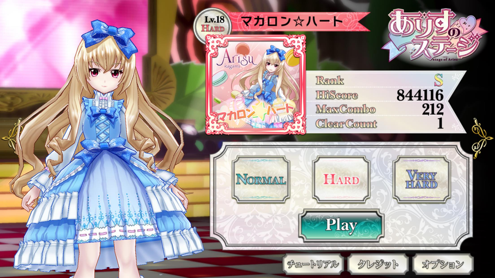
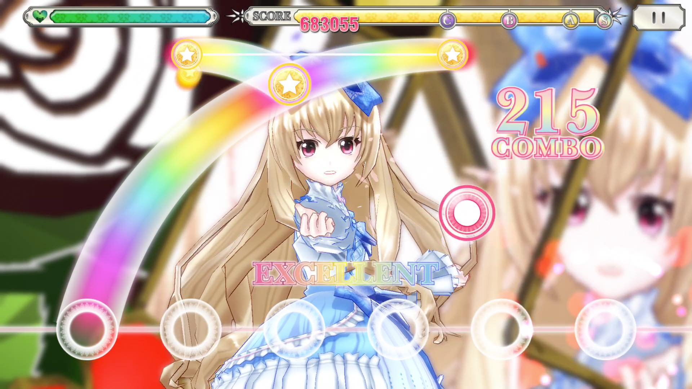
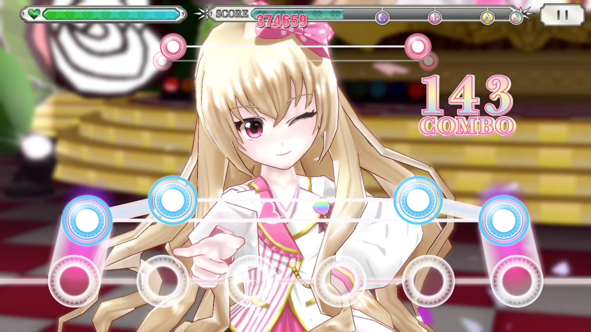
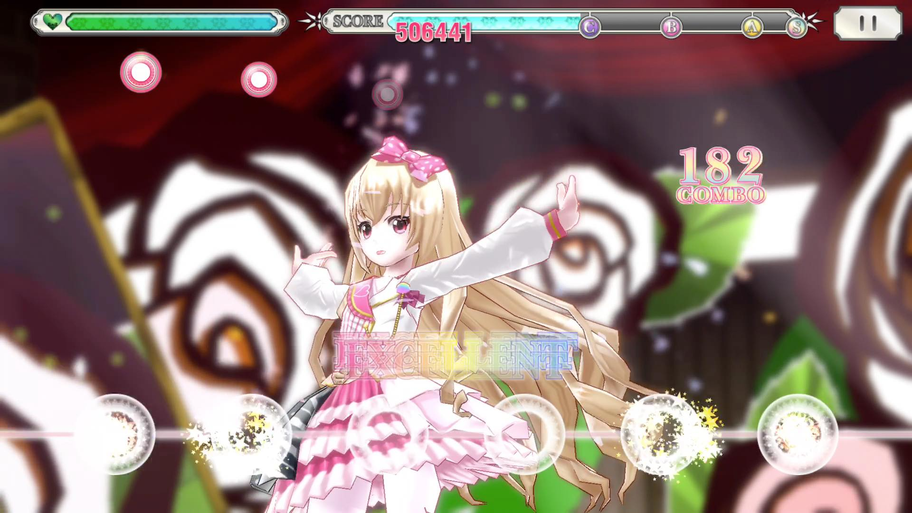
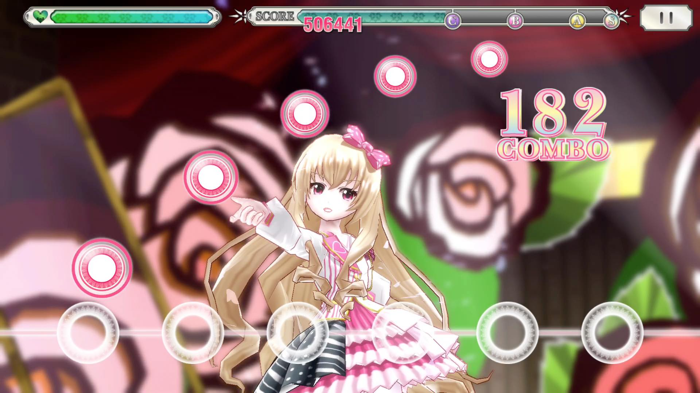
■クレジット
- 企画・プログラム：ふみ
- 3Dキャラ：十矢
- 3Dステージ：ハピコ
- 3Dステージ動画：Yamamotion
- デザイン監修：クク
- UIデザイン：しおじゃけ
- BGM・SE：塚越雄一朗(NanosizeMir)
- VOICE：ななひら
- Special Thanks：プロデューサーK
- ・Nouveau Monde
- 歌：加賀美ありす(CV:ななひら)
- 作詞・作曲・編曲：塚越雄一朗(NanosizeMir)
- モーションアクター：シヅキ
- モーションキャプチャ協力：k-shi
- モーション修正：久保田
- ジャケットキャライラスト：十矢
- 曲名ロゴ：DELIKA
- ・マカロン☆ハート
- © Unity Technologies Japan/UCL
※このコンテンツは、アイドリズムのキャラクター利用に関するガイドラインに従って作られた二次創作物です。
「今度ありす、新曲と一緒にパリデビューしちゃうんだよ☆」
アイドリズムの加賀美ありすが、3Dステージで歌って踊る！
かわいいありすの3Dリズムゲーム登場！
曲はこのゲームのための書き下ろし！
歌もダンスも頑張って、みんなをファンにするって決めたの…！
だから、今後のありすの活躍も見ててよね！
■ランキング
世界中のプレイヤーの記録が見られるよ。今日の譜面は毎日変わるから、みんな同じ譜面で競争なの！
■更新履歴
3.2(2026年9月4日 Android)
■ありす
- 2回目以降の再生で目線がカメラに合わなくなるのを直しました
- 曲の終わりとリザルトでウィンクが崩れるのを直しました
- MVの終わりに前のリザルトの表情が残るのを直しました
■判定
- レーンの間を叩いてもノーツを拾うようにしました。中心に近いほど広く判定します
- ワイド端末で判定位置が横にずれるのを直しました
■タイミング調整
- タイミング調整(ms)と判定調整(ms)の幅を広げました
- タイミング自動調整を追加しました。最近のプレイ記録のずれをタイミング調整に反映します
■音と振動
- タップ音の遅れを縮めました
- タップ音・長押し音・スライド音の音量を個別に調整できます
- タップとスライドの振動(ハプティクス)を追加しました。既定はスライドのみONです
- 音量スライダーの効き方を見直し、真ん中あたりでも聞こえる大きさにしました
■プレイ設定
- 譜面／タイミング／音と振動／表示の4つに区切りました
■プレイ記録
- ゲームオーバーの回も記録に残り、詳細を開けます
■ランキング
- 自分のユーザーIDをランキングとオプションに表示します
- ランキングの見出しに自分の番号と順位を出します
■そのほか
- リザルト詳細を開いている間は背景の3Dを止めて負荷を下げました
- リザルトに入る瞬間のちらつきと、前回の数字の残りを直しました
- FPS表示を画面上部の1行にしました。MVモードでは曲クレジット表示中だけ下に寄せます
3.1(2026年9月4日 iOS)
■新たな難易度KIMAGUREを追加
- 遊ぶたびに譜面が変わる難易度を追加しました
- みんなと同じ譜面が遊べる「今日の譜面」があります
- レベルは「プレイ設定」から選べます
- シードを固定すると、同じ譜面をもう一度遊べます
■ローカライズ
- AI翻訳ベースにはなりますが、UIと歌詞を20言語に対応しました
■MVモードを追加
- ステージを鑑賞できるモードを追加しました
- 画面を左右へスワイプすると、見る位置(カメラ)が切り替わります
- 音源は「歌あり」「歌なし」から選べます
■MVの歌詞表示
- 日本語、訳、ローマ字、意味訳、カラオケ表示を自由に組み合わせられます
- 歌詞の先行表示を切り替えられます
■リザルト
- EXCELLENTを2段階に分けました。判定がより厳しい方は虹で表示します
- 精度(Accuracy)の表示を追加しました。すべて虹のEXCELLENTなら101%になります
- リザルト詳細を追加しました。プレイ結果、タイミング、判定、ノート種類を、散布図と数字で振り返れます
- タイミングは中央値とばらつき、FAST／SLOWの内訳、小節ごとの推移、曲の区間(イントロ／Aメロ／サビなど)ごとの成績を確認できます
- リザルト詳細はWebページでも開けます。共有もできます
■プレイ記録とランキング
- タイトルに「プレイ記録」を追加しました。過去のプレイの詳細を見返せます
- オンラインランキングを追加しました
- 通算ベストと「みんなの記録」、クリア数も見られます
- ランキングへの送信は同意制です。あとからオプションでいつでも変えられます
■プレイ設定
- 「判定調整(ms)」を追加。見た目を動かさずに判定だけを合わせられます
- ※従来の「タイミング調整」は見た目と判定が一緒に動きます
- FAST／SLOW表示をGREAT／GOODとEXCELLENTで別々に切り替えられます
- レーン別判定表示を追加しました
- 背景の暗さを調整できます
- 通常の譜面で「ミラー」「ランダム」を選べます
■グラフィックとサウンド
- DOF、ブルーム、光源、ステージ演出、手元パーティクル、アンチエイリアス、レンダースケールを個別に調整できます
- クオリティ調整に最低〜最高とカスタムを用意し、端末に合わせて自動で選ぶようにしました
- フレームレートとFPS表示を追加しました
- 「音の応答」を追加。反応優先／バランス／録画・安定から選べます
■そのほか
- スライドがすっぽ抜ける不具合を改善しました
- 内部エンジンをUnity 6.3へ更新し、最新のOSに対応しました。それに伴い、各種エフェクトや見た目にも変更が入っています
- エンジン更新に伴い、対応OSはiOS 15.0以上になりました
- 3Dステージのサイリウム表示を変更しました
- ステージ演出映像のカウント表示が歌詞と合っていなかったのを直しました
- ポーズから戻るとき、いきなり再開せず少し前に巻き戻してから始まるようにしました
- ミスしたときのライフの減りを緩めました
- ありすの髪や衣装の揺れ方と当たり判定を、3Dモデルから設定しなおしました
- ありすの口パク、表情、カメラの追従を調整しました
- 画面の切り替えをシームレスにしました
- いくつかのチュートリアルを追加しました
- クレジットにSNSへのリンクを追加しました
- オプションにプレイ記録の削除、ランキングのユーザーID削除を追加しました
- プライバシーポリシーの表示をオプション内へ移動しました
- 起動にかかる時間を短縮しました
■動画
■スクリーンショット
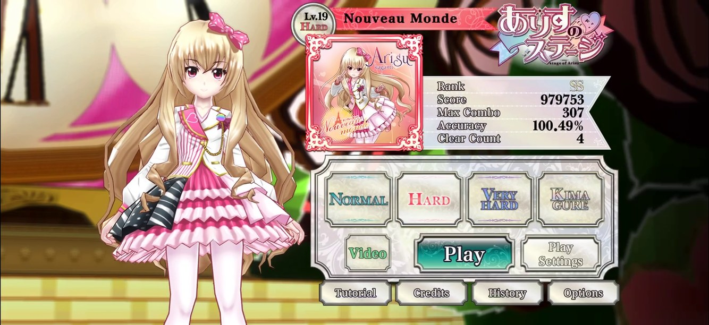
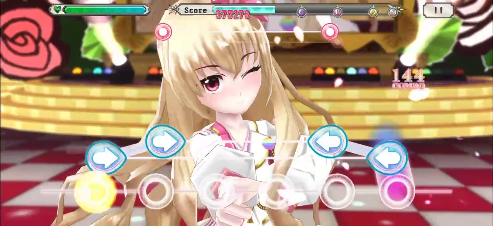
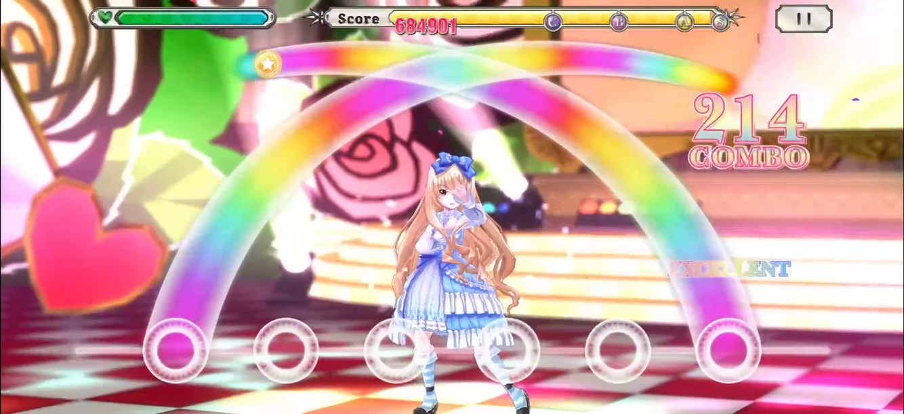
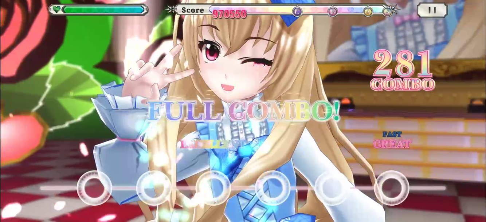
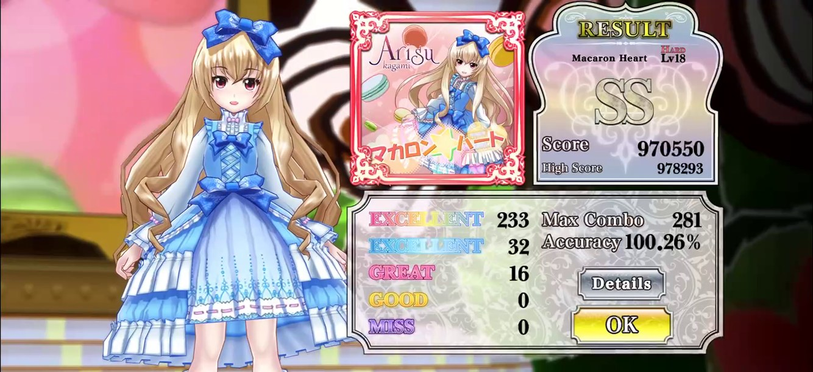
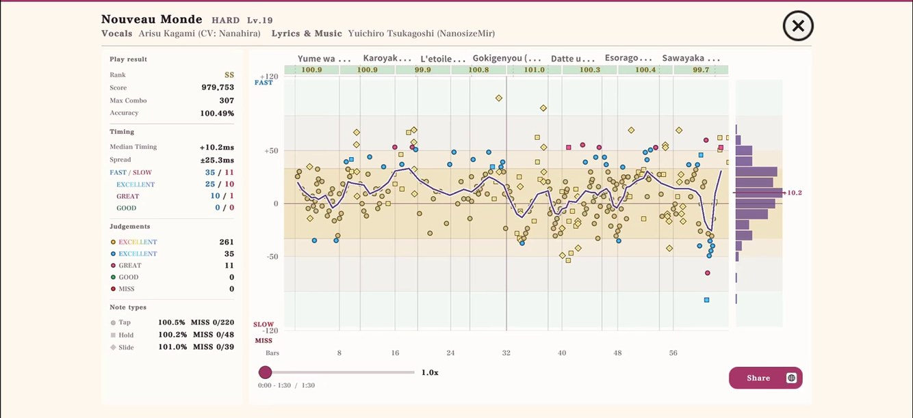
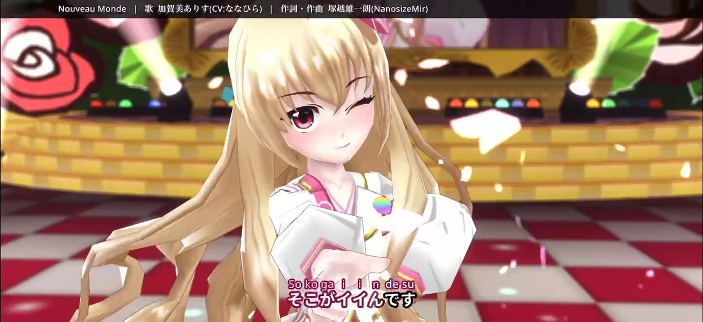
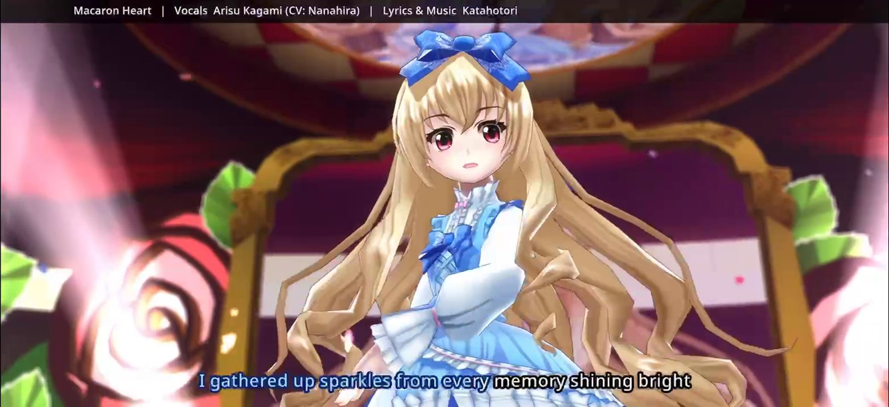
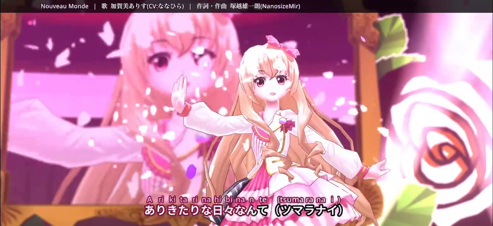
■クレジット
- 企画・プログラム：ふみ
- 3Dキャラ：十矢
- 3Dステージ：ハピコ
- 3Dステージ動画：Yamamotion
- デザイン監修：クク
- UIデザイン：しおじゃけ
- BGM・SE：塚越雄一朗(NanosizeMir)
- VOICE：ななひら
- Special Thanks：プロデューサーK
- ・Nouveau Monde
- 歌：加賀美ありす(CV:ななひら)
- 作詞・作曲・編曲：塚越雄一朗(NanosizeMir)
- モーションアクター：シヅキ
- モーションキャプチャ協力：k-shi
- モーション修正：久保田
- ジャケットキャライラスト：十矢
- 曲名ロゴ：DELIKA
- ・マカロン☆ハート
- © Unity Technologies Japan/UCL
※このコンテンツは、アイドリズムのキャラクター利用に関するガイドラインに従って作られた二次創作物です。
■概要
- 【タイトル】 ありすのステージ(体験版)
- 【ジャンル】 音楽ゲーム
- 【配布場所】 C90 3日目(2016/8/14 日曜日) 西4階 e35-a (会場MAP)
- 【対応環境】 Windows XP SP2以降 / Mac OS X 10.8以降
- 【頒布価格】 200円(DLカード配布)
- 【頒布内容】 ありすのステージ(体験版)と楽曲「Nouveau Monde(ショートサイズ)」の音源
■動画
■スクリーンショット
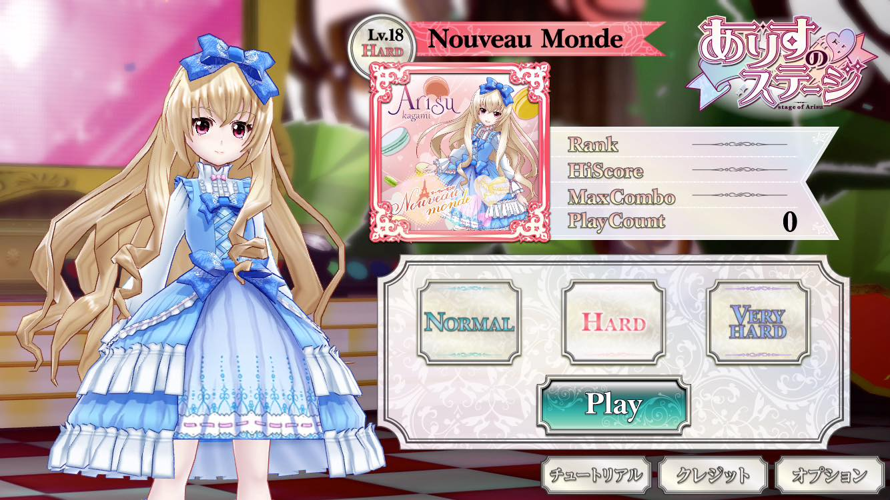
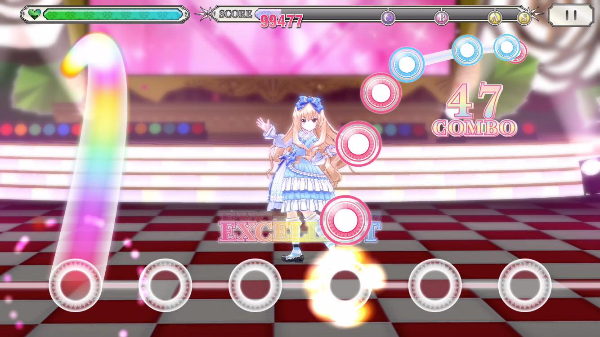
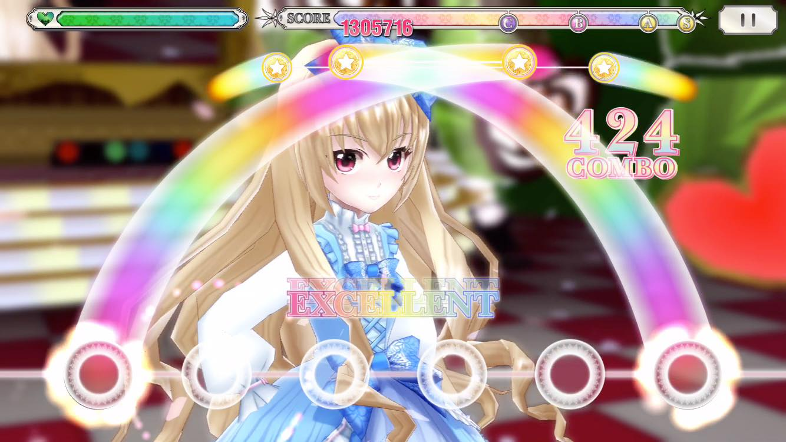
■クレジット
- 企画・プログラム：ふみ
- 3Dキャラ：十矢
- 3Dステージ：ハピコ
- 3Dステージ動画：Yamamotion
- UI監修：クク
- UIデザイン：しおじゃけ
- BGM・SE：塚越雄一朗(NanosizeMir)
- ボイス：ななひら
- Special Thanks：プロデューサーK
- ☆NouveauMonde
- © Unity Technologies Japan/UCL
※このコンテンツは、アイドリズムのキャラクター利用に関するガイドラインに従って作られた二次創作物です。